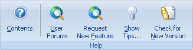
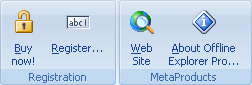

Use the Help tab to access the online Help system, company Web site, Tip of the Day and About dialogs.

Contents - Opens the online Help contents page.
User Forums - Opens a page with forum on to discuss products and get help from other people.
Request New Feature - Opens a page to describe a problem or ask for an enhancement.
Show Tips - Shows the Tip of the Day dialog box.
Check for New Version - Contact Web site to see if a newer version is available.

Buy NOW! - Opens online store page to order Portable Offline Browser.
Register - Opens dialog to enter the registration code.
Web Site - Opens the Web site.
About - Shows copyright, version information, release notes and license for the Portable Offline Browser. Also allows you to register your copy of Portable Offline Browser.